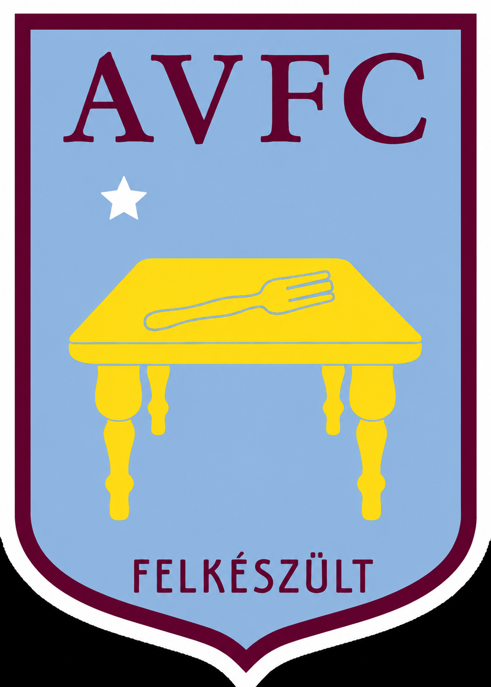

Fő csapat
A kezdőcsapat a taktika és sebesség kombinációja, amely mindig a győzelemre törekszik.
Üdvözlünk a stadionban
Modern játék, erős közösség és tiszta, profi megjelenés a klub minden részletében.
Rólunk
Asztalon Villa több mint egy csapat. Szenvedélyünk a sport, és a közösség építése, amely támogatja a játékosokat és a szurkolókat egyaránt.

Kerület
Fedezd fel, hogyan épül fel a klubunk: a fő csapat, az utánpótlás és a szurkolók közös ereje.
A kezdőcsapat a taktika és sebesség kombinációja, amely mindig a győzelemre törekszik.
Fiatal tehetségek fejlődnek és kapnak lehetőséget profi pályafutásuk elkezdéséhez.
A közönségünk a klub lelke. Együtt mindig nagyobb erőre teszünk szert.
Sikerek
Az Asztalon Villa Football Club büszke sikereiről és elért céljairól.
A klub létezése óta minden trófát elnyertük
Kiváló teljesítmény az összes szezonban
2024
Erős csapatmunka és táktikai játék (eskü nem szijjártó szponzorált)
2024-2025
Tisztességes játék és csapatszellem. És mert nem mertek még megszólalni sem az ellenfelek.
Programok
Nézd meg a következő mérkőzéseinket és a fontos dátumokat, hogy semmiről se maradj le.
Dátum: 2026. június 10.
Helyszín: Eötvös tesiterem
Dátum: 2026. június 15.
Helyszín: Műfüves
Kapcsolat
Ha szeretnél többet megtudni a klubról, jelentkezni vagy szurkolni, írj nekünk.
Email: info@asztalonvilla.hu
Telefon: +36 1 234 5678